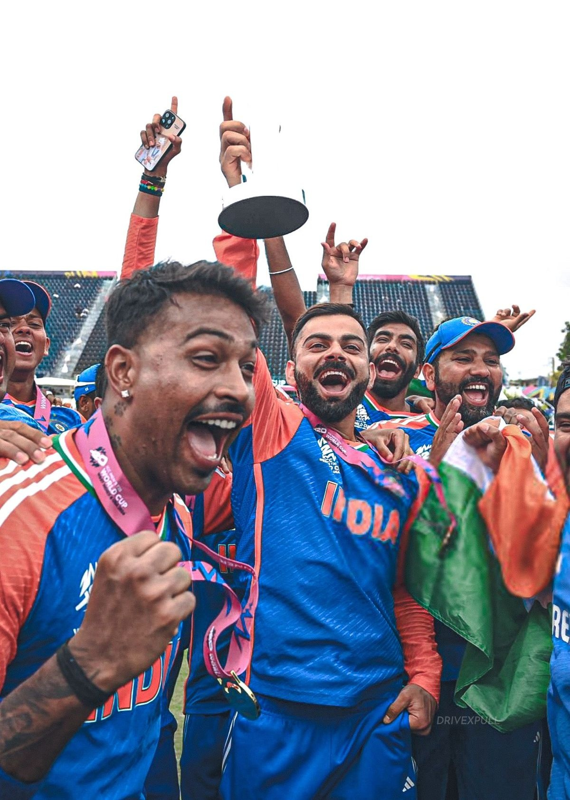

T20
CRICKET
Velocity is the only currency. A 20-over blitz where power-hitters redefine physics and every delivery is a potential cinematic climax.
Established 2003
Velocity is the only currency. A 20-over blitz where power-hitters redefine physics and every delivery is a potential cinematic climax.

T20 Cricket is the heartbeat of the modern sporting era.
Born from a need for speed, T20 stripped cricket to its kinetic core. What started in the English counties as a marketing experiment ignited a global firestorm. It introduced 360-degree batting, mystery spin, and brought the game to the bright lights of prime-time television.
2007
India wins the inaugural T20 World Cup in South Africa. The victory transforms the format into a commercial and cultural juggernaut.
2016
Carlos Brathwaite hits 4 consecutive sixes in the final over to snatch the World Cup for the West Indies. Pure cinematic drama.
2024
The World Cup enters the USA. The format achieves its goal—taking cricket beyond its traditional boundaries to the entire world.
"In T20, there is no tomorrow. You strike or you fall."